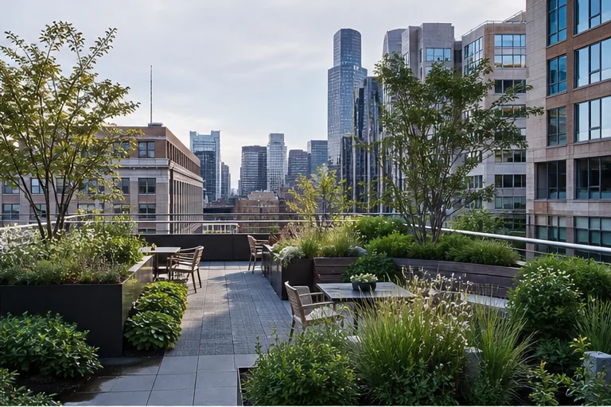
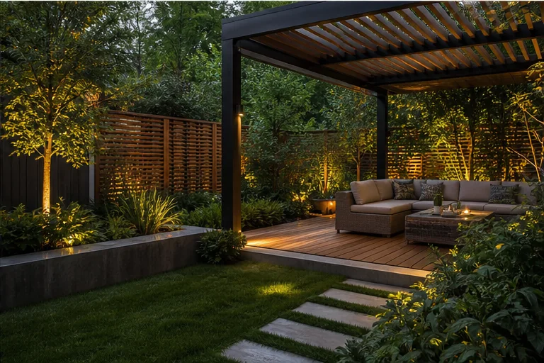

Arrival & Threshold
Front-yard scenarios often begin with clear movement, a legible entry, selective privacy, and a planting hierarchy that supports the architecture.
- Entry walk relationships
- Screening and openness
- Driveway and porch transitions
This gallery presents design directions and planning scenarios. Images are not represented as completed Verdeon client projects.
Concept collection
Use the filters to focus on a property type or planning layer.






Residential concepts
Front-yard scenarios often begin with clear movement, a legible entry, selective privacy, and a planting hierarchy that supports the architecture.
Backyard scenarios can coordinate active and quiet uses while preserving useful circulation and planting depth.
Explore the Collection
Explore residential, commercial, and visualization-focused landscape concepts created to clarify spatial relationships, outdoor character, planting structure, and possible project direction.
Explore front yards, backyards, patios, planting, circulation, and outdoor rooms shaped around everyday residential use.
Explore ResidentialReview courtyards, shared terraces, entries, pedestrian routes, and public-facing landscapes designed around broader property needs.
Explore CommercialSee how plan views, perspective studies, materials, planting, and lighting may be communicated before implementation decisions.
Explore VisualizationExplore planning directions for homes, gardens, patios, planting, lighting, and outdoor environments that need structure, clarity, and long-term visual balance.
Commercial concepts
Internal landscapes may support pause, circulation, views from inside, and a quieter microclimate.
Public-facing spaces may balance identity, accessibility, visibility, seating, and durable planting.
Move from inspiration to context
Share the site, priorities, and questions behind the images that caught your attention.